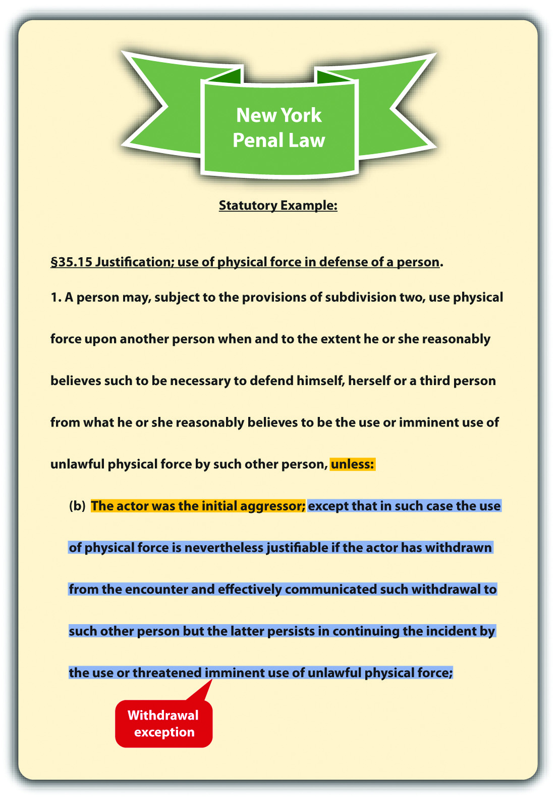

As stated previously, self-defenseA defense based on justification that allows a defendant to use a reasonable degree of force to defend against an imminent attack. is a defense based on justification. Self-defense can be a defense to assault, battery, and criminal homicide because it always involves the use of force. In the majority of states, self-defense is a statutory defense.Mich. Comp. Laws § 780.972, accessed November 13, 2010, http://www.legislature.mi.gov/(S(3li5rs55kkzn2pfegtskdunn))/mileg.aspx?page=getObject&objectName=mcl-780-972&highlight=self-defense. However, it can be modified or expanded by courts on a case-by-case basis.
Most states have special requirements when the defendant uses deadly forceForce that can produce death. in self-defense. Deadly force is defined as any force that could potentially kill. An individual does not have to actually die for the force to be considered deadly. Examples of deadly force are the use of a knife, gun, vehicle, or even bare hands when there is a disparity in size between two individuals.
Self-defense can operate as a perfect or imperfect defense, depending on the circumstances. Defendants who commit criminal homicide justified by self-defense can be acquitted, or have a murder charge reduced from first to second or third degree, or have a charge reduced from murder to manslaughter. Criminal homicide is discussed in detail in Chapter 9 "Criminal Homicide".
To successfully claim self-defense, the defendant must prove four elements. First, with exceptions, the defendant must prove that he or she was confronted with an unprovoked attack. Second, the defendant must prove that the threat of injury or death was imminent. Third, the defendant must prove that the degree of force used in self-defense was objectively reasonable under the circumstances. Fourth, the defendant must prove that he or she had an objectively reasonable fear that he or she was going to be injured or killed unless he or she used self-defense. The Model Penal Code defines self-defense in § 3.04(1) as “justifiable when the actor believes that such force is immediately necessary for the purpose of protecting himself against the use of unlawful force by such other person on the present occasion.”
In general, if the defendant initiates an attack against another, the defendant cannot claim self-defense.State v. Williams, 644 P.2d 889 (1982), accessed November 13, 2010, http://scholar.google.com/scholar_case?case=18157916201475630105&hl=en&as_sdt=2&as_vis=1&oi=scholarr. This rule has two exceptions. The defendant can be the initial aggressor and still raise a self-defense claim if the attacked individual responds with excessive force under the circumstances, or if the defendant withdraws from the attack and the attacked individual persists.
In some jurisdictions, an individual cannot respond to the defendant’s attack using excessive force under the circumstances.State v. Belgard, 410 So.2d 720 (1982), accessed November 13, 2010, http://www.leagle.com/xmlResult.aspx?xmldoc=19821130410So2d720_1997.xml&docbase=CSLWAR1-1950-1985. For example, an individual cannot use deadly force when the defendant initiates an attack using nondeadly force. If an individual does resort to deadly force with a nondeadly force attack, the defendant can use reasonable force in self-defense.
Patty and Paige get into an argument over a loan Patty made to Paige. Paige calls Patty a spoiled brat who always gets her way. Patty slaps Paige across the face. Paige grabs a carving knife from the kitchen counter and tries to stab Patty. Patty wrestles the knife away and stabs Paige in the chest, killing her. In this example, Patty provoked the attack by slapping Paige across the face. However, the slap is nondeadly force. In many jurisdictions, Paige cannot respond to nondeadly force with deadly force, like a knife. Paige used excessive force in her response to Patty’s slap, so Patty can use deadly force to defend herself and may not be responsible for criminal homicide under these circumstances.
In some jurisdictions, the defendant can be the initial aggressor and still use force in self-defense if the defendant withdraws from the attack, and communicates this withdrawal to the attacked individual.N.Y. Penal Law § 35.15(1)(b), accessed November 13, 2010, http://law.onecle.com/new-york/penal/PEN035.15_35.15.html. If the attacked individual persists in using force against the defendant after the defendant’s withdrawal, rather than notifying law enforcement or retreating, the defendant is justified in using force under the circumstances.
Change the excessive force exception example in Section 5 "Example of the Excessive Force Exception". Imagine that after Patty slaps Paige across the face, Paige begins pounding Patty with her fists. Patty manages to escape and runs into the garage. She huddles against the garage wall. Paige chases Patty into the garage. Patty says, “Please, please don’t hurt me. I’m sorry I slapped you.” Paige kicks Patty in the back. Patty turns around and karate chops Paige in the neck, rendering her unconscious. In many jurisdictions, Patty’s karate chop is lawful under a theory of self-defense because she completely withdrew from the attack. Thus Patty is probably not criminally responsible for battery, based on the karate chop to the neck. However, Patty could be criminally responsible for battery based on the slap to Paige’s face because this physical contact was unprovoked and not defensive under the circumstances.
Figure 5.3 New York Penal Law
The defendant cannot use any degree of force in self-defense unless the defendant is faced with an imminent attack.State v. Taylor, 858 P.2d 1358 (1993), accessed November 13, 2010, http://scholar.google.com/scholar_case?case=1539441759711884447&hl=en&as_sdt=2&as_vis=1&oi=scholarr. Imminent means the attack is immediate and not something that will occur in the future. If the defendant is threatened with a future attack, the appropriate response is to inform law enforcement, so that they can incapacitate the threatening individual by arrest or prosecution. Another situation where imminence is lacking is when the attack occurred in the past. When the defendant uses force to remedy a previous attack, this is retaliatory, and a self-defense claim is not appropriate. The legal response is to inform law enforcement so that they can incapacitate the attacker by arrest or prosecution.
Some state courts have expanded the imminence requirement to include situations where a husband in a domestic violence situation uses force or violence regularly against the defendant, a battered wife, therefore creating a threat of imminent harm every day.Bechtel v. State, 840 P.2d 1 (1992), accessed November 13, 2010, http://scholar.google.com/scholar_case?case=14171263417876785206&hl=en&as_sdt=2&as_vis=1&oi=scholarr. If a jurisdiction recognizes the battered wife defenseA defense that allows a wife who is a victim of spousal abuse to use force in self-defense under certain circumstances even if an attack is not imminent., the defendant—the battered wife—can legally use force against her abusive husband in self-defense in situations where harm is not necessarily immediate.
Vinny tells Fiona that if she does not pay him the $1,000 she owes him, he will put out a contract on her life. Fiona pulls out a loaded gun and shoots Vinny. Fiona cannot successfully argue self-defense in this case. Vinny’s threat was a threat of future harm, not imminent harm. Thus Fiona had plenty of time to contact law enforcement to help protect her safety.
Dwight and Abel get into a fist fight. Dwight knocks Abel unconscious. Dwight observes Abel for a few minutes, and then he picks up a large rock and crushes Abel’s skull with it, killing him. Dwight cannot claim self-defense in this situation. Once Dwight realized that Abel was unconscious, he did not need to continue to defend himself against an imminent attack. Dwight’s conduct appears retaliatory and is not justified under these circumstances.
Spike severely beats and injures his wife Veronica every couple of days. Spike’s beatings have become more violent, and Veronica starts to fear for her life. One night, Veronica shoots and kills Spike while he is sleeping. In states that have expanded self-defense to include the battered wife defense, Veronica may be successful on a theory of self-defense.
Dr. Alan J. Lipman Catherine Crier on Winkler Spousal Abuse Murder Trial
Mary Winkler claimed the battered wife defense as an imperfect defense to the murder of her husband, a pastor.Mara Gay, “Abused Wife Who Killed Preacher Husband Speaks Out,” Huffingtonpost.com website, accessed August 25, 2011, http://www.aolnews.com/2010/11/05/abused-wife-who-killed-preacher-husband-speaks-out.
The defendant cannot claim self-defense unless the degree of force used is objectively reasonable under the circumstances. This requirement primarily focuses on the use of deadly force and when it is legally justified. In general, deadly force can by employed in self-defense when a reasonable person feels threatened with imminent death, serious bodily injury, and, in some jurisdictions, a serious felony.Or. Rev. Stat. § 161.219, accessed November 13, 2010, http://www.leg.state.or.us/ors/161.html. Serious bodily injury and serious felony are technical terms that are defined in a statute or case, depending on the jurisdiction. The Model Penal Code states that deadly force is not justifiable “unless the actor believes that such force is necessary to protect himself against death, serious bodily harm, kidnapping or sexual intercourse compelled by force or threat” (Model Penal Code § 3.04(2)(b)).
Nicholas, an intruder, pins Wanda to the floor of her garage and begins to forcibly remove her clothing. Wanda feels around the floor with her hand and finds a screwdriver. She plunges the screwdriver into Nicholas’s neck, killing him. Wanda has used appropriate force and can claim self-defense in most jurisdictions. A reasonable person in Wanda’s situation would feel deadly force is necessary to repel Nicholas’s sexual assault. Nicholas’s attack is a serious felony that could result in serious bodily injury or death. Thus the use of deadly force is legally justified under these circumstances.
Early common law stated that the defendant had a duty to retreat to the wallA common-law doctrine that requires a defendant to retreat if it is safe to do so, before using deadly force in self-defense. before using deadly force against an attacker. The majority of states have rejected this doctrine and instead allow the defendant to stand his or her groundA doctrine that allows a defendant to use deadly force in self-defense if appropriate, rather than retreating. if the defendant is not the initial aggressor in the confrontation.State v. Sandoval, 130 P.3d 808 (2006), accessed November 13, 2010, http://www.publications.ojd.state.or.us/S53457.htm. In jurisdictions that still follow the retreat doctrine, the defendant must retreat if there is an objectively reasonable belief that the attacker will cause death or serious bodily injury, and a retreat won’t unreasonably increase the likelihood of death or serious bodily injury.Connecticut Criminal Jury Instructions, No. 2.8-3, accessed November 13, 2010, http://www.jud.ct.gov/ji/criminal/part2/2.8-3.htm. The Model Penal Code defines the duty to retreat by stating that the use of deadly force is not justifiable if “the actor knows that he can avoid the necessity of using such force with complete safety by retreating” (Model Penal Code § 3.04 (2) (b) (ii)). An established exception to the retreat doctrine in jurisdictions that follow it is the defense of the home, which is called the castle doctrine. The castle doctrine is discussed shortly.
Sandy and Sue have an argument in the park. Sue pulls a knife out of a sheath that is strapped to her leg and begins to advance toward Sandy. Sandy also has a knife in her pocket. In a state that follows the retreat doctrine, Sandy must attempt to escape, if she can do so safely. In a state that follows the stand-your-ground doctrine, Sandy can defend herself using her own knife and claim lawful self-defense. Note that Sandy was not the initial aggressor in this situation. If Sandy pulled a knife first, she could not use the knife and claim self-defense, whether the state follows the stand-your-ground doctrine or the duty to retreat doctrine.
The defendant cannot claim self-defense unless a reasonable person in the defendant’s situation would believe that self-defense is necessary to avoid injury or death. If the defendant honestly but unreasonably believes self-defense is necessary under the circumstances, a claim of imperfect self-defenseAn imperfect defense available when the defendant has an honest but unreasonable belief that force is necessary to defend against injury or death. may reduce the severity of the offense.State v. Faulkner, 483 A.2d 759 (1984), accessed November 13, 2010, http://scholar.google.com/scholar_case?case=17158253875987176431&hl=en&as_sdt=2&as_vis=1&oi=scholarr. However, the defendant is still guilty of a crime, albeit a less serious crime.
Justin, who weighs over two hundred pounds and is six feet tall, accidentally bumps into Wanda, a slender ten-year-old child. Wanda spins around and shakes her fist at Justin. Justin responds by shoving Wanda so hard that she crashes into a telephone pole and is killed. Justin probably cannot claim self-defense under these circumstances. A reasonable person would not believe Wanda is about to seriously injure or kill Justin. Thus Justin’s response is unnecessary and unjustified in this case.
Change the unjustified conduct example given in Section 5 "Example of Unjustified Conduct". Imagine that a slender, female ten-year-old severely abused Justin when he was younger. Since the abusive incident, Justin has an unreasonable fear of female children and honestly believes that they can and will hurt him if provoked. If the trier of fact determines that Justin honestly but unreasonably believed that Wanda was about to inflict serious bodily injury or kill him, any charge of murder could be reduced to manslaughter on a theory of imperfect self-defense.
Answer the following questions. Check your answers using the answer key at the end of the chapter.
Were They Entitled to a Jury Instruction on Imperfect Self-Defense?
Read Menendez v. Terhune, 422 F.3d 1012 (2005). The case is available at this link: http://cases.justia.com/us-court-of-appeals/F3/422/1012/569492.
Lyle and Eric Menendez were tried and convicted of murder and conspiracy to commit murder of their parents. There were two series of trials. The first trial, which had two separate juries, resulted in two hung juries. At the first trial, the brothers introduced evidence of sexual abuse by their father, and the court instructed the jury on imperfect self-defense. The imperfect self-defense jury instruction was based on the brothers’ honest but unreasonable fear that their father would hurt or kill them.Menendez v. Terhune, 422 F.3d 1012, 1024 (2005), accessed November 19, 2010, http://cases.justia.com/us-court-of-appeals/F3/422/1012/569492. The second trial took place in front of one jury and resulted in the convictions. During the second trial, some evidence of abuse was excluded, Lyle Menendez refused to testify, and there was no jury instruction on imperfect self-defense. After sentencing, the brothers petitioned for a writ of habeas corpus based on several claims, including the exclusion of the abuse evidence and failure to instruct the jury on imperfect self-defense.Menendez v. Terhune, 422 F.3d 1012, 1016 (2005), accessed November 19, 2010, http://cases.justia.com/us-court-of-appeals/F3/422/1012/569492. The US Court of Appeals for the Ninth Circuit affirmed the district court’s denial of the petition on grounds that there was insufficient evidence to support the jury instruction on imperfect self-defense and no foundation to support the admissibility of the evidence of abuse. The court held that the evidence confirmed there was no imminent threat of serious bodily injury or death when the brothers killed their parents.
The facts of the case are lurid. Evidence included the sexual abuse of both boys by their father, surreptitiously taped psychotherapy sessions, spending sprees, fabricated mafia hit stories, and alleged will tampering by the brothers after the parents were killed.
Check your answer using the answer key at the end of the chapter.
Lyle and Erik Menendez News Report
A news story on the conviction of the Menendez brothers is presented in this video: